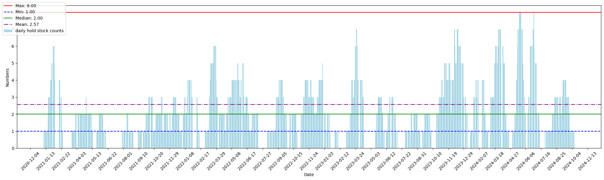
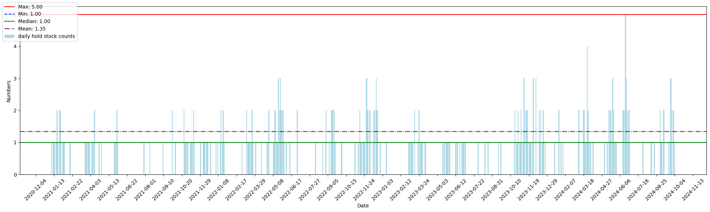

剛上市櫃股票

剛上市櫃股票策略分析
(一) 策略發想
不管是直接上市櫃還是興櫃轉上市，前五天皆無一般台股的漲跌幅限制， 這就是市場中常見「蜜月行情」。上市後若股價表現不佳，公司在投資人面前無法交代，因此剛上市櫃嘗試站在買方看表現。
但實際情況仍需考量：
- 承銷商的力道是否足夠。
- 上市時的市場氛圍是否利多。
(二) 回測條件
- 回測時間：2020年6月到2024年10月
- 回測標的：所有新上市櫃股票
(三) 統計資料介紹
- 交易期間：從 2021-01-08 開始到 2024-10-09
- 總交易次數：156筆
- 排除條件：剔除無流動性股票（如開盤即收盤的股票）
核心統計：
- 持有股票天數：728天
- 總交易天數：910天
- 持有時間佔比：80%
- 最多同時持倉股票數：8檔
- 平均持倉股票數：2.57檔

(四) 回測結果
策略條件：
- 買進：上市第一天開盤即買進
- 賣出：持有13天後收盤賣出
回測結果：
回測顯示，單純持有 13 天的效果最佳：
- 總報酬率：659.56%
- 持有天數範圍：3~20天
- 無停損策略下，可能因一次重大虧損導致最大回撤（MDD）過高。
| 持有天數 | 檔數 | 總報酬率 |
|---|---|---|
| 7 | 161 | 364.10% |
| 8 | 160 | 458.91% |
| 9 | 159 | 430.05% |
| 10 | 159 | 428.05% |
| 11 | 159 | 519.95% |
| 12 | 158 | 578.93% |
| 13 | 156 | 659.56% |
| 14 | 156 | 651.68% |
| 15 | 156 | 595.73% |
(五) 優化策略
策略條件：
- 買進：上市第一天開盤即買進
- 賣出停利：第8天收盤賣出
- 賣出停損條件：
- 上市第一天收黑
- 第二天收盤跌破第一天紅K的一半
- 第二天跌破第一天開盤價
1. 上市第一天收黑 (共66筆)
如果連第一天開盤都收黑的話，代表中籤後賣壓沉重，買盤也不夠積極，可能承銷商的態度也沒有很積極地做多。因此，若第一天收黑K，推測後續幾天表現也不好。
根據數據顯示，若第一天收黑，最後賣出日(持有8天)，平均每檔會虧損 -6.72%。
不過，因為剛上市股多半禁止當沖，只能隔天早上停損，但就算如此，每檔的停損虧損仍可下降到 -4.7%。且也不需要持有至到八天，可提前釋放資金。
2. 第二天收盤跌破第一天紅K的一半 (共47筆)
短波段交易期待在短時間內能有漲勢的延續性，因此，若第二天收盤跌破第一天紅K的一半(概念是跌破第一天持有者的平均成本價)，也應停損/停利賣出。
根據數據顯示，至最後賣出日(持有8天)，平均每檔會虧損 -2.51%，但提前停損後，虧損可下降至 -1.54%。
優化數據：
| 持有天數 | 檔數 | 總報酬率 |
|---|---|---|
| 7 | 161 | 593.52% |
| 8 | 161 | 638.74% |
| 9 | 161 | 593.22% |
| 10 | 161 | 545.38% |
結論：
有停損機制後，持有天數縮短至 8 天，總報酬率僅下降 3.25%。同時，平均持倉天數降低至 2.61 天。
(六) 上市櫃類別分析
回測期間發現部分行業表現極差：
- 貿易百貨：5檔全部停損
- 食品：4檔全部停損
雖然樣本數不多，但這些類別的勝率為 0%，顯示市場資金對其興趣不高，未來策略需避開。
(七) 重新統計資料
- 持有股票的天數：313天
- 總交易天數：910天
- 持有時間佔比：34.4%
- 最多同時持倉股票數：5檔
- 平均持倉股票數：1.35檔

(八) 現實考量
-
胃納量問題
剛上市櫃的新股票流動性不像一般已經上市櫃股票的流動性這麼好，會有胃納量問題，就算想買在開盤價或附近，也可能因為賣出人數不多，無法加大持股，因此這個策略會有資金胃納量問題，就算整體的報酬率很好，也可能因為資金整體投資部位不高導致報酬率被稀釋。 -
開盤價震盪
嘗試執行幾次發現開盤後往往震盪過大，如果沒有第一盤掛到，有時候會一路往上進攻，導致害怕買不到而追高，造成成本被墊高的情況發生，若每檔成本都被墊高1%，其實也會大幅影響此策略績效。 -
無漲跌幅限制且禁當沖
因為剛上市櫃股有蜜月行情，無漲跌幅限制也無法當沖，這也就表示如果買進後持續下跌，無法及時停損，若買進部位過大可能造成一次交易賠光之前獲利的情況發生，因此為求風險控制只能小量進場，這也呼應第一點，此策略無法大量買進，就算績效卓越也可能佔整體交易部位的少部分。 -
資金效益
因為此策略屬於事件交易，若無上市櫃時就會有資金閒置的問題，需另外找地方孳息。
(九) 結論
此策略雖有胃納量限制，但期望值優秀：
- 勝率：33.54%
- 平均勝利收益率：19.70%
- 平均損失率：-3.97%
適合在資金充裕時作為事件交易的輔助選擇。
(十) 相關連結
可追蹤即將上市櫃的個股資訊：即將上市櫃個股